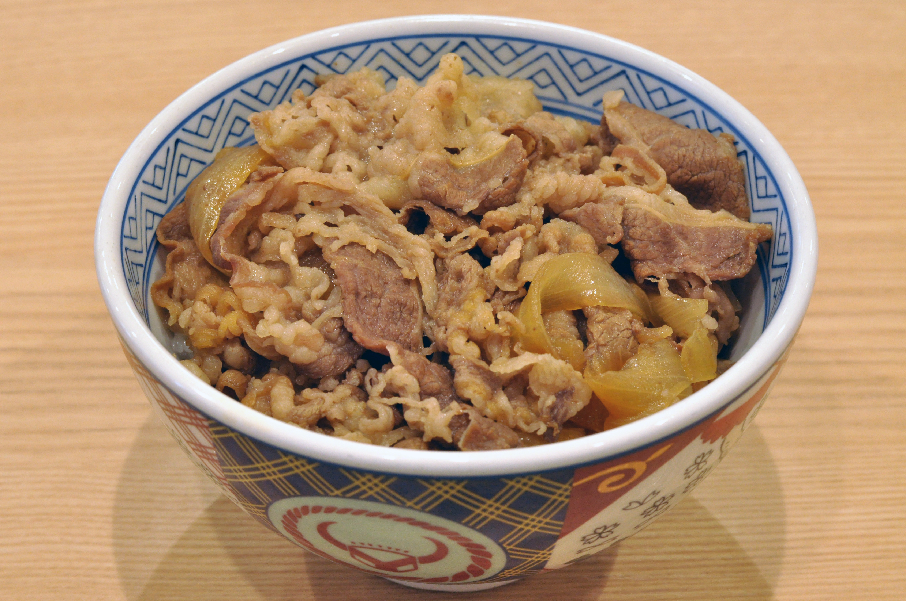

Easy Gyudon

Description: Delicious, sweet, and savory gyudon. Best made the day before eating.
- 1/2 bl of Thinly sliced Beef (200~250g) fatty beef is better
- 1 Onion
- 1 pc ginger (5g)
- Cooked rice
- 2 cups water
- 2 tbsp mirin
- 2 tbsp sugar
- 3 tbsp sake
- 3 tbsp soy sauce
- dashi powder
Steps
- Slice onions/ginger thinly
- Combine all sauces/sugar in a pot, then add meat the pot
- Simmer/lightly boil on medium for 5 mins until foam appears and skim off foam
- Add thinly sliced ginger and half the onions
- Reduce heat to medium low and cook for 20 mins
- Add the other half of the onion and cook until desired doneness
Home